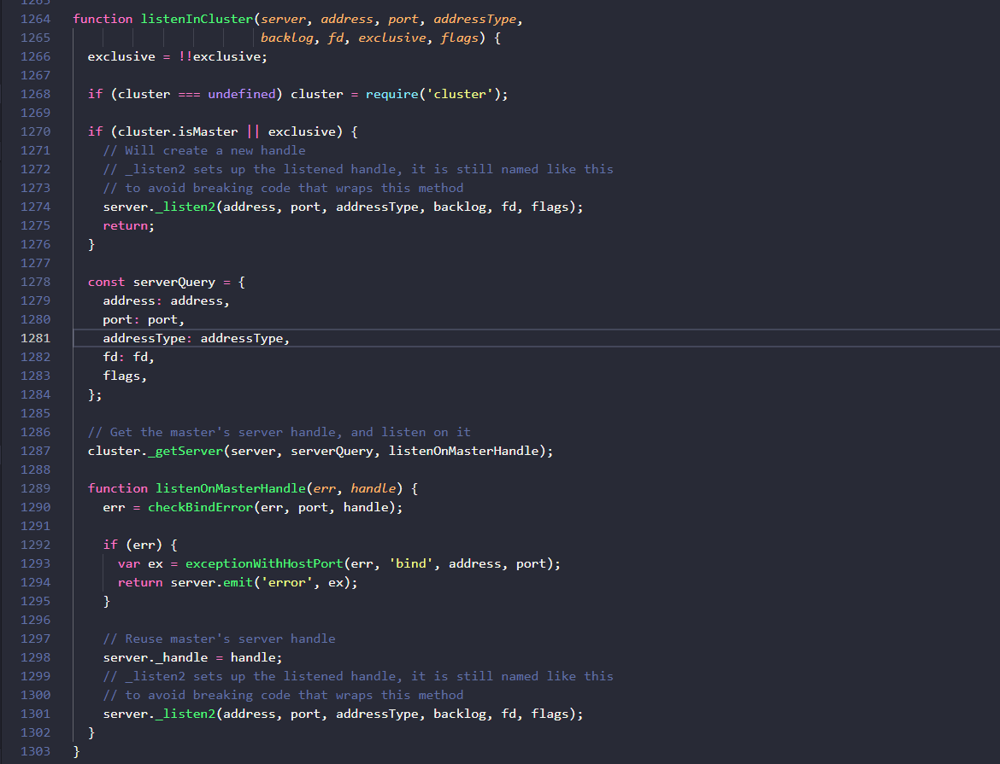
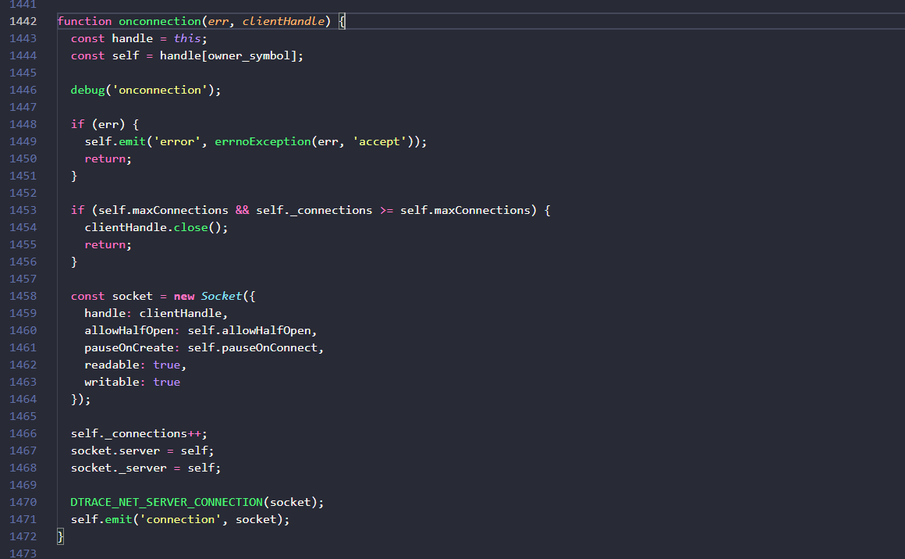
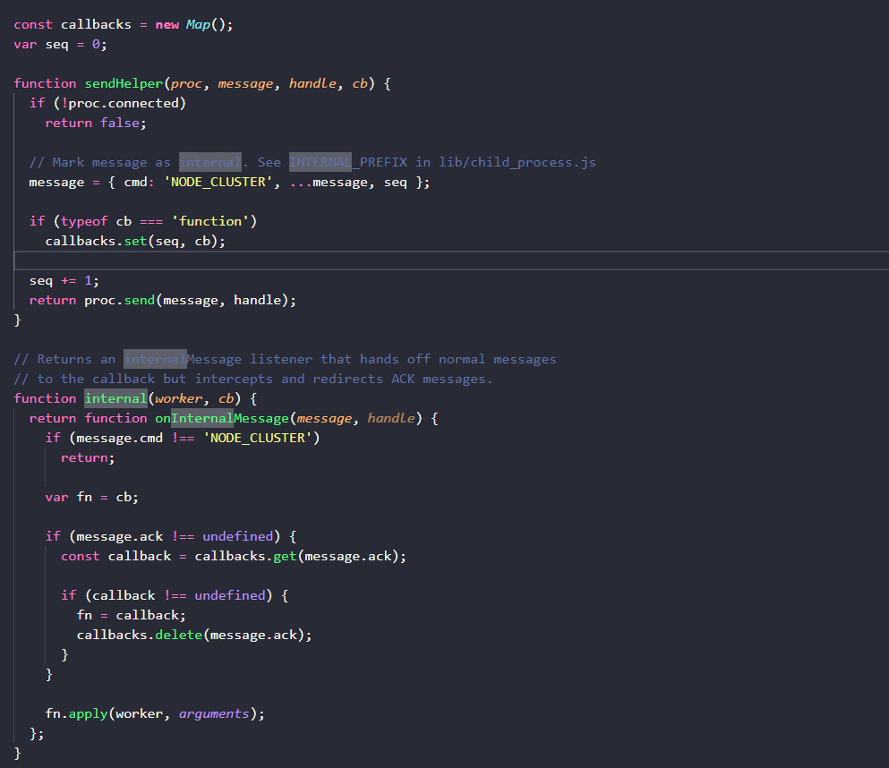
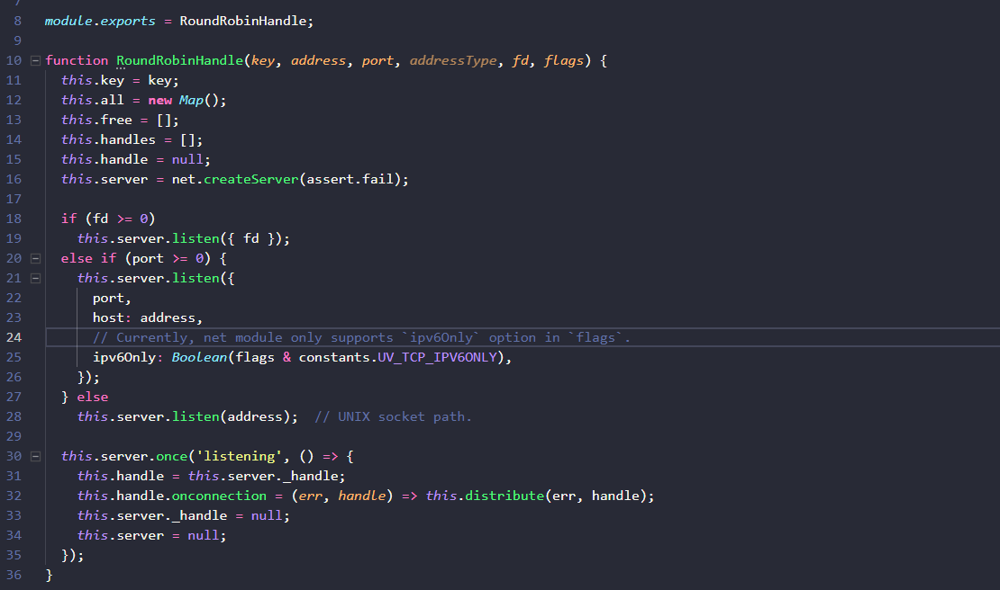
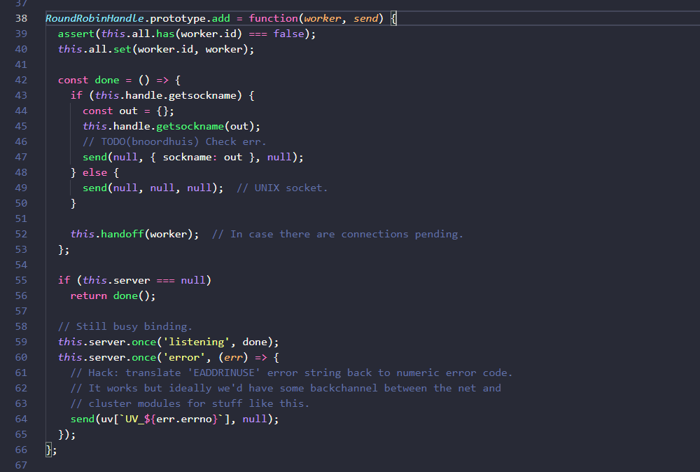
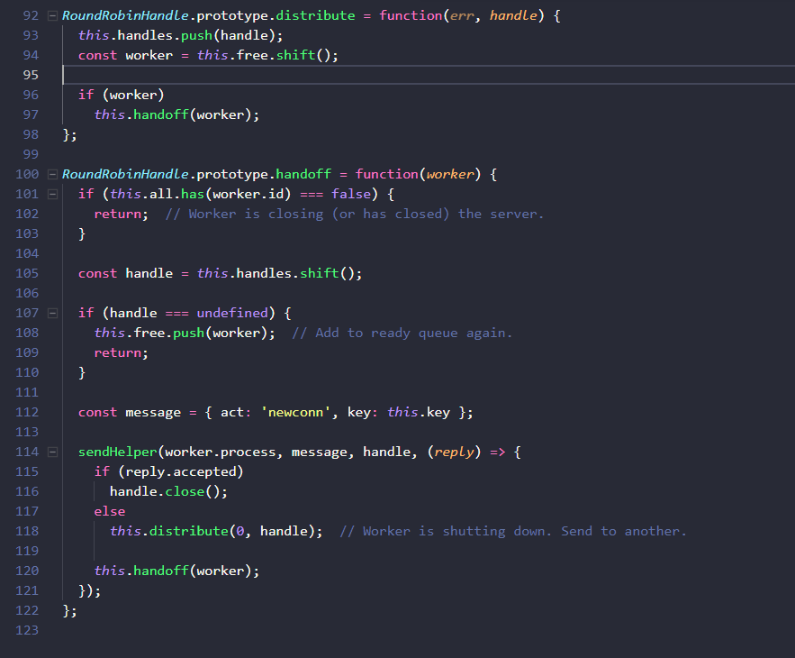
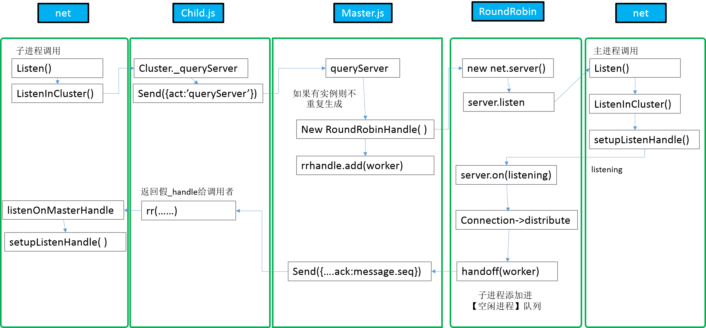

原文连接:https://www.cnblogs.com/dashnowords/p/11019089.html
目录

示例代码托管在：http://www.github.com/dashnowords/blogs
博客园地址：《大史住在大前端》原创博文目录
华为云社区地址：【你要的前端打怪升级指南】
阅读本章需要先阅读本系列前两章内容预热一下。
一. 引言
前两篇博文中已经分别介绍了使用cluster模块建立集群时主进程执行cluster.fork( )方法时的执行逻辑，以及net模块在不同场景下建立通讯的基本原理。本篇继续分析cluster模块，从第一个子进程开始建立服务器讲起，cluster基本用法示例代码再来一遍：
const cluster = require('cluster');
const http = require('http');
const numCPUs = require('os').cpus().length;
if (cluster.isMaster) {
console.log(`主进程 ${process.pid} 正在运行`);
// 衍生工作进程。
for (let i = 0; i < numCPUs; i++) {
cluster.fork();
}
cluster.on('exit', (worker, code, signal) => {
console.log(`工作进程 ${worker.process.pid} 已退出`);
});
} else {
// 工作进程可以共享任何 TCP 连接。
// 在本例子中，共享的是 HTTP 服务器。
http.createServer((req, res) => {
res.writeHead(200);
res.end('你好世界\n');
}).listen(8000);
console.log(`工作进程 ${process.pid} 已启动`);
}代码是足够精简的，实现过程也确实是很庞大的工程。每一个子进程中执行的逻辑都是http.createServer().listen()，我们来看看它是如何一步一步运作而最终建立通讯机制的，你会发现它和上一节中的简易模型非常相似。
二.server.listen方法
在http模块的源码中很容易找到http.createServer( )方法的逻辑就是透传参数生成了一个net.Server实例，这个实例在上一节中就已经介绍过，实际上就只是生成了一个server的实例，所以这里跳转到net.Server.prototype.listen()（net.js文件1306-1404行），基本逻辑如下：
Server.prototype.listen = function(...args){
const normalized = normalizeArgs(args);
var options = normalized[0];
/*..获取监听参数中的句柄对象..*/
options = options._handle || options.handle || options;
//如果options上有句柄，句柄是一个TCP实例
if(options instanceof TCP){
//......
listenInCluster(......);
}
//如果配置参数中有fd（file descriptor）
if(typeof options.fd === 'number' && options.fd >=0){
//......
listenInCluster(......);
}
//如果参数中有port端口号
if(typeof options.port === 'number' || typeof options.port === 'string'){
//.....
listenInCluster(......);
}
//如果参数中有port端口号 或 字符型的pipe名称
if(typeof options.port === 'number' || typeof options.port === 'string'){
//.....
listenInCluster(......);
}
}这里不难看出它的逻辑就和net模块官方文档中描述的server.listen( )的几种场景对应，可以监听带有非空handle属性的句柄对象，数字型端口号，字符串型命名管道地址，或者直接传入配置参数合集options，然后分别根据几种不同的情况来调用listenInCluster方法（集群功能的逻辑主线是数字型port，假设传入了12315）。
listenInCluster方法定义如下：

大致可以看出，如果是主进程，就直接调用server._listen2()方法然后return了,否则（也就是在工作进程中的逻辑，敲黑板！！！这里是重点了）,构造一个serverQuery的参数集，可以看到里面记录了以各种不同姿势调用这个方法时传入的参数，所以有的参数为null也很正常，然后调用了cluster._getServer( )方法，这就是工作进程在引用cluster模块时引入的child.js中定义并挂载在cluster上的方法，最后一个参数listenOnMasterHandle是一个回调函数，也是一个错误前置风格的函数，可以看到，它接收了一个句柄对象，并把这个句柄对象挂载在了子进程这个server实例的_handle属性上，接着也调用了server._listen2( )方法，可以看到两种情况下调用这个方法时传入的参数是一样的。接着来到server._listen2( )方法，它绑定了setupListenHandle方法（别抓狂，这是net模块中相关逻辑的最后一步了），简化代码如下：
function setupListenHandle(......){
if (this._handle) {
//工作进程在执行上一步逻辑时，在cluster._getServer()回调函数中把一个handle传递给了server._handle
debug('setupListenHandle: have a handle already');
} else {
//主进程会执行的逻辑
debug('setupListenHandle: create a handle');
//......
rval = createServerHandle(address, port, addressType, fd, flags);
//......
this._handle = rval;
}
//......
this._handle.onconnection = onconnection;
this._handle[owner_symbol] = this;
//....
}工作进程通过cluster._getServer( )方法拿到了一个handle，所以不会再生成，而主进程server.listen(port)执行时会走到else分支，然后生成一个新的绑定了端口号的特殊的socket句柄然后挂载到主进程server._handle上，这里对句柄的connection事件回调逻辑进行了修改，相关代码如下：

这里需要注意的是，server._handle的connection事件和server的connection事件是两码事，server._handle指向的是一个绑定了端口的特殊的socket句柄，当客户端connect一个server时实际上底层是客户端socket与服务端这个socket的对接，所以需要在server._handle这个的connection回调函数中，将客户端的socket句柄clientHandle重新包装，然后再通过触发server的connection事件将其转发给server实例。所以在使用server实例时可以直接添加connectionListener:
let server = net.createServer(socket=>{
/*这个回调函数就是server的connection事件回调
* 这里接收到的socket就是server._handle的connection收到的客户端句柄clientHandle封装成的socket实例
*/
})无论是主进程还是子进程都会触发这个逻辑，只需要看成是一种功能性质的封装即可，并不影响业务逻辑。
三.cluster._getServer( )方法
下面回到cluster模块继续，_getServer( )方法只存在于子进程代码中，源码位于lib/internal/cluster/child.js，方法定义在54-106行，基本逻辑如下：
cluster._getServer = function(obj, options, cb){
/* 这里的obj就是子进程中运行上面listenInCluster方法中传入的server,
* options就是serverQuery,
* cb就是最后要把主进程handle传回去的回调函数listenOnMasterHandler
*/
//先构建index然后进行了一通记录，就是根据监听的参数来构建一个识别这个server的索引
//然后构建消息
const message = {
act: 'queryServer',
index,
data: null,
...options
};
//......
/* 发送act:queryServer消息，并传一个回调函数，
* 从形参命名就可以看出，这个回调函数被调用时会被传入一个句柄，
* 最后根据不同的调度策略来执行不同的函数，这里主要看Round-robin
*/
send(message, (reply, handle) => {
if (typeof obj._setServerData === 'function')
obj._setServerData(reply.data);
if (handle)
shared(reply, handle, indexesKey, cb); // Shared listen socket.
else
rr(reply, indexesKey, cb); // Round-robin.
});
//......
}rr方法将响应reply和前一个调用者传入的回调函数cb进行了透传，rr的函数体就是实现listen方法偷梁换柱的地方了：
// Round-robin. Master distributes handles across workers.
function rr(message, indexesKey, cb) {
if (message.errno)
return cb(message.errno, null);
var key = message.key;
function listen(backlog) {
return 0;
}
function close() {
if (key === undefined)
return;
send({ act: 'close', key });
handles.delete(key);
indexes.delete(indexesKey);
key = undefined;
}
function getsockname(out) {
if (key)
Object.assign(out, message.sockname);
return 0;
}
const handle = { close, listen, ref: noop, unref: noop };
if (message.sockname) {
handle.getsockname = getsockname; // TCP handles only.
}
assert(handles.has(key) === false);
handles.set(key, handle);
cb(0, handle); //这里的cb其实就是listenInCluster方法中定义的那个listenOnMasterHandler回调
}可以看到rr方法中构建了一个假的handle句柄，并调用cb将它传了回去，然后执行逻辑回回到net模块，前文已经提这个handle在回调函数中被挂载在了server._handle上，于是setupListenHandle( )的逻辑中也不会重新构建句柄。
重新梳理一下这部分的逻辑，就是子进程中调用listen方法时，会通过cluster._getServer( )拿到一个假句柄，然后执行一个空的listen方法，这样就避免了端口的重复监听。所以我们可以推测，cluster._getServer( )必然会触发主进程启动一个监听端口的服务器，并建立对子进程的调度，进程之间的IPC通讯可以直接通过process对象来完成，不需要再重新构建跨进程通讯管道。
四.跨进程通讯工具方法Utils
继续进行后续内容前，先来看一个独立的跨进程通讯工具，源码放在lib/internal/cluster/utils.js。

它是cluster模块发送跨进程消息的内部代理，这个模块对外暴露了消息发送方法sendHelper和内部消息监听器的预处理方法internal，源码很短就不贴了。当子进程调用sendHelper发送消息时，utils内部会把这条消息处理完成后需要执行的回调函数先缓存起来，然后给消息添加一些包装标记，然后再发出去；internal会对传入的内部消息监听器进行代理，过滤掉非NODE_CLUSTER类别的消息，如果消息携带的message对象没有ack属性则最终会执行绑定监听时传入的回调函数，否则会从缓存中找出之前暂存的回调函数来执行。
发个消息为什么要搞这么复杂呢？这个ack属性又是哪来的呢？其实这个utils模块主要是在跨进程的双向消息通讯时实现了方法复用，同一个message从工作进程发往主进程时和主进程发回给工作进程时是由同一个事件名internalMessage携带的，那如何来区分消息发送的方向呢，就是ack属性，如果消息带有ack属性，就表示它是由主进程发给子进程的，那么就要调用子进程中的后续处理方法，这个方法其实就是子进程发送消息给主进程之前暂存在utils内部callbacks里的方法，也就是child.js中cluster._getServer()中调用send方法时传入的回调方法，也就是net模块中listenInCluster( )方法中的listenOnMasterHandle方法，这个方法漂洋过海透传了N个函数，的确不容易看懂，“回调地狱”也的确不是闹着玩的。再看看没有ack属性的情况，没有这个属性时消息是从子进程发给主进程的，自然要调用主进程的方法，从逻辑里不难看出，这种情况下方法引用的就是internal方法执行时传入的第二个参数(master.js源码213行执行的internal(worker, onmessage)的onmessage这个函数)，源码中就是利用高阶函数这种分步执行的特点实现了引用。
五.act:queryServer消息
故事再回到第三节工作进程中发出act:'queryServer的消息后，来看主进程master.js中的代码，主进程中在调用cluster.fork( )时就绑定了对worker线程internalMessage的监听,对于act:queryServer类型的集群消息，主进程已经定义了queryServer这个方法来处理。这段源代码的主要逻辑如下：
1.根据重要参数组拼接出一个唯一的key
2.1.根据key查询是否有已经存在的调度句柄round-robin-handle，如果有则直接进行后续逻辑
2.2.如果没有已经存在的调度句柄，则选择调度策略，实例化一个调度句柄，并把它添加进记录里
3.把消息数据message.data挂载在调度句柄的handle.data字段上
4.执行调度句柄的add方法，把子进程和一个回调方法传进实例，回调方法被执行时会从调度句柄中取得数据，并组装返回消息（带有ack属性和其他数据的消息）发给子进程，子进程收到这个消息后执行的方法，就是前文分析过的返回假句柄给net模块中的`listenInCluster()`逻辑。从开篇的多进程代码可以看到，每个子进程中执行的listen方法监听的端口号都是一样的，所以每个子进程发送queryServer消息给主进程并执行这段逻辑时，其实对应的key都是一样的，所以调度对象RoundRobinHandle只会实例化一次，在之后的过程中，每一个子进程会根据key获取到同一个调度实例，并调用add方法将worker对象和一个回调函数添加进调度实例，可以看到回调函数执行时，就会将原message中的seq属性的值添加给ack属性再挂载上处理后的数据并发送给子进程。那么剩下的事情，就剩下调度对象RoundRobinHandle的源码了。
我们不妨来推测一下，它的主要逻辑就是在主进程中建立真正监听目标端口的服务器，并添加当客户端请求到达时对于工作进程的调度代码，下一节我们就一起来验证一下。
六.轮询调度Round-Robin-Handle
调度方法的源码是internal/cluster/round_robin_handle.js，另一种shared_handle.js是windows下使用的调度策略，先不做分析（主要是没研究过，不敢瞎说）。先从构造函数开始：

16行，bingo，终于看到主进程启动服务器了。接着就是根据参数而分流的监听方法，集群代码中对应的是20行的带有有效port参数的情况，所以服务器就在主进程启动了，最后来看看server开始触发listening事件时执行的逻辑（此处调用的是once方法，所以只会执行一次）:
1.将主进程server的内部_handle句柄，挂载给round-robin-handle实例
2.当这个句柄被连接时（也就是客户端socket执行connect方法连接后），会触发它的`connection`事件，回调函数会调用`distribute`方法来分发这个客户端socket句柄，注意32行后面半句的箭头函数方法，这里的handle就是指客户端`socket`实例。
3.将server._handle指向null
4.将server属性指向null如果你还记得net模块中listen方法的逻辑的话可能会有印象，_handle的connection事件回调其实原本已经被复写过一次了，也就是说单进程运行的程序在建立服务器时，server._handle的connection事件会触发server实例的connection事件，而在集群模式下，主进程中调度实例中服务器句柄server._handle的connection再次被复写，将逻辑改变为分发socket，而子进程中的server._handle还是保持原来的逻辑。
最后一步指向null的逻辑还涉及到add方法，继续看主进程中调用的add方法:

这个send形参实际上就是主进程中传入的最终向子进程发送返回消息的那个回调函数，它被封装进了done函数，这里需要着重看一下55行的逻辑，this.server === null这个条件实际上对应的就是构造函数中服务器开始监听的事件，所以55-59行的代码以及构造函数中添加的listening事件的回调函数需要联合在一起来理解，也就是每个子进程的send方法都被包裹在一个独立的done函数中，这个函数会在主进程的server处于listening状态后触发执行，并且只触发一次。当它触发时，会从实例的handle属性（也就是server的_handle句柄）上取得socket名称然后调用send方法，这个特殊socket的名称在回调函数中对应reply形参，最终挂载在message中发回了子进程。
至此其实主进程和子进程建立服务器的消息已经完成了闭环。最后再看一下RoundRobinHandle中最后两个方法：

当客户端socket执行connect方法连接到主进程server的句柄后，主进程会调用round-robin-handle实例的distribute方法，这个方法的逻辑比较简单，把这个客户端句柄加入到待处理队列，然后从空闲进程队列头部取出一个worker进程，把它作为参数传给handoff方法。
handoff方法中，从客户端请求句柄队列的头部取出下一个待处理的socket，如果已经没有要处理的请求，就把传进来的worker放回空闲子进程队列free中。在add方法内部封装的done方法中也执行了这个handoff方法，现在再回过头来看这个add方法的作用，就是当主进程处于监听状态后，将每一个子进程对象worker依次添加到空闲进程队列free中。最后够早了一个新的act:newconn消息，并通过调度选出的worker.process对象实现跨进程通讯来将待处理句柄和【新连接】消息发送给子进程。
七. 图解集群建立过程的逻辑跳转
集群建立过程的逻辑大致的跳转路径如下，细节部分直接参考前文的讲解即可。
